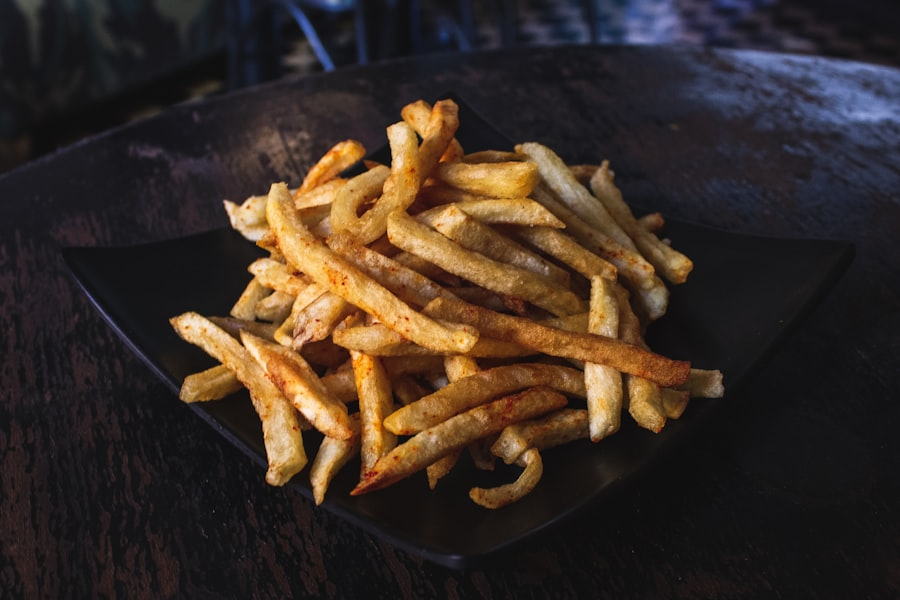
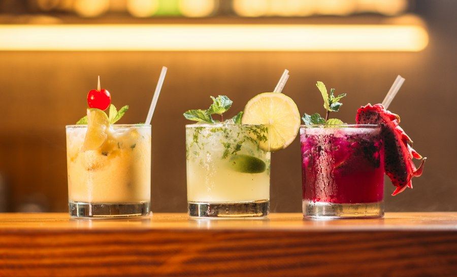

The Bisonte Family Journey
Born from a deep passion for Western New York culinary traditions and brought to life across the Carolinas.
From the 716 to the 704
Bisonte Pizza Co. was created with one uncompromising purpose: to serve genuine Buffalo, NY-style comfort food without shortcuts.
Growing up in Western New York, pizza night was an institution. The crust had real substance—airy and focaccia-like with a crisp golden bottom. The sauce was gently sweet from ripe tomatoes. The pepperoni curled into charred little bowls that held pure flavor. When we moved south to Charlotte, we couldn't find anything that matched those cherished memories.

What Guides Every Pie We Bake
No Shortcuts on Ingredients
We use unbleached spring wheat flour, California Stanislaus plum tomatoes, 100% whole-milk Wisconsin mozzarella, and genuine natural-casing cup-and-char pepperoni.
Old-School Deck Oven Baking
Every pizza is baked on genuine stone decks and steel pans at high temperatures. This creates the signature golden crunch and caramelization that conveyor ovens simply cannot replicate.
Community & Game Day Hub
Our pizzerias in Uptown and Matthews are gathering spaces for sports enthusiasts, expats, and local foodies who appreciate honest hospitality and generous portions.

Handmade Cannoli & Authentic Desserts
No meal at Bisonte is complete without our crisp handmade cannoli shells filled to order with fresh sweetened whole-milk ricotta cream and rich dark chocolate chips.
Explore Full Menu